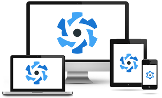

Introdução ao Quasar
O Quasar Framework é uma solução robusta baseada em Vue.js para desenvolvimento multiplataforma, permitindo criar aplicações
Web (SPA, PWA, SSR), Mobile (Android/iOS) e Desktop
a partir de uma única base de código, focado em Performance e produtividade.
Principais Características e Benefícios:
- Código Único (Single Codebase): Escreva uma vez e distribua para todas as plataformas, reduzindo drasticamente o tempo de desenvolvimento
- Performance: Focado em aplicações rápidas e leves
- Baseado em Vue.js: Aproveita o poder do Vue 3 para criar interfaces de usuário reativas e componentizadas
- Ecossistema Completo: Inclui ferramentas como o Quasar CLI para gerenciar o ciclo de vida do projeto, build, e configurações de UI

Roadmap de Aprendizado e conteúdos PT-br
Hoje no mercado de desenvolvimento Web o Quasar é um dos Frameworks mais famosos, e consequentemente um dos mais requisitados para vagas de emprego/projetos empresariais.
Caso este documento tenha te despertado curiosidade e vontade de aprender mais sobre o desenvolvimento utilizando o combo Quasar + vue.js estaremos disponibilizando abaixo
uma listagem dos melhores conteúdos gratuitos que visam ensinar mais sobre o assunto:
- Patrick Monteiro (Canal no Youtube)
Ele é, sem dúvida, a maior referência em Quasar Framework no Brasil hoje e possue em seu canal playlist completas de aprendizado
Link canal do Patrick - Matheus Battisti (Canal no Youtube)
Embora o foco principal dele não seja só o Quasar, ele tem conteúdos excelentes sobre o ecossistema, além disso, a base do Quasar é o Vue.js,
e o canal do Matheus é um dos melhores do Brasil para dominar o Vue
Link canal do Matheus - Documentação Oficial
A documentação oficial do Quasar é um ótimo guia para iniciantes e possui diversos exemplos do código em prática
Link da Doc Oficial